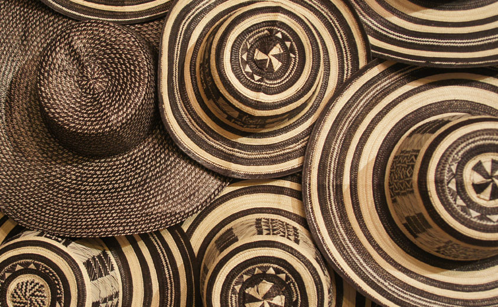

Bienvenido a Tu-Chin
En Tu-Chin celebramos el arte, la cultura y la tradición de nuestras raíces. Cada uno de nuestros productos — sombreros, mochilas, asientos, carteras y sillas artesanales — está elaborado con dedicación, talento y el toque único de nuestros artesanos locales.
Creemos en mantener viva la esencia de lo hecho a mano, combinando diseño, calidad y autenticidad en cada pieza. Ya sea que busques un detalle especial, decorar tu hogar o llevar contigo una muestra de nuestra cultura, en Tu-Chin encontrarás algo hecho con alma y propósito.
Tu conexión con lo artesanal comienza aquí.
Top Productos Más Vendidos
Conoce todos nuestros productos y déjate llevar por la tradición artesanal.
